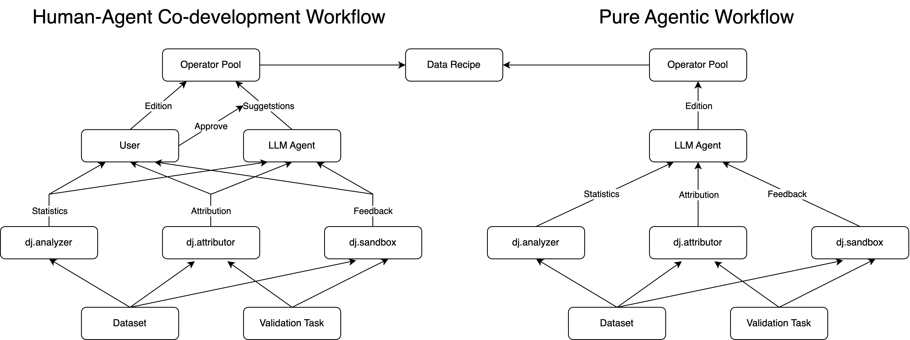

🔧 InteRecipe: Interactive Recipe Generation Workflow#
Overview#
This demo showcases an interactive and progressive workflow for generating data processing recipes using a Data-Juicer Operator Pool. The system enables users and agents to collaboratively build, edit, and validate recipes in a flexible and transparent manner.

Usage#
Before running, set below environment variables:
export DASHSCOPE_API_KEY=your_dashscope_key
Install dependencies:
cd ..
uv pip install '.[interecipe]'
cd interactive_recipe
[Optional] Start the copilot server (replace the DATA_JUICER_PATH variable in ../qa-copilot/setup_server.sh with the absolute path to your data-juicer repository):
cd ../qa-copilot
bash setup_server.sh
Launch the demo with streamlit:
streamlit run app.py
InteRecipe’s core functionality and Q&A Copilot (Ask AI component) are mutually independent. The latter requires separate deployment but does not affect the operation of the former. About Q&A Copilot Detailed Configuration, please refer to qa-copilot/README.md
Operator Pool Usage#
Check ./playground.ipynb.
✨ Core Feature: Operator Pool#
The Operator Pool is a specialized, ordered dictionary-like object that stores all candidate Data-Juicer operators (ops) for data processing.
Each operator in the pool includes:
Basic information: name and description
Status: whether the operator is enabled
Arguments: name, description, type, and current value
Statistics (based on a dataset snapshot): min, max, mean, std, quantiles
Ordering: the position of the operator in the current workflow
📊 Visualization & Interaction
The full state of the operator pool is visualized to provide users with a clear and editable overview.
The LLM agent leverages this state to suggest modifications or improvements to the data recipe.
🛠️ Supported Actions
Both the user and the LLM agent can take the following actions:
Enable or disable an operator
Modify argument values of an operator
Change the execution order of operators
Each unique configuration of the operator pool corresponds to a distinct data processing recipe.
❓ Why Use an Operator Pool?
Progressive & Interactive Recipe Generation
Recipe construction is typically multi-stage—e.g., modality alignment, goal specification, data analysis, attribution, etc. The operator pool enables fine-grained control and editing at each stage, supporting incremental and iterative development.
Robustness & Validity
Directly asking an LLM to generate a full data recipe in one step often results in invalid outputs. With the operator pool, each modification is validated through strict checks, ensuring recipe integrity and providing feedback when issues arise.
Modules#
LLM Assistant Module: This module can be used to consult LLM Assistant with current operator pool status and auxiliary information. The user can apply the suggestions generated by LLM by a single click.
Data Analysis Module: This module leverages the
dj.analyzertoolkit to perform comprehensive data analysis. The statistics are properly visualized to assist the user in editing the operator pool.[WIP] Data Attribution Module: This module aims to measure the contribution of each operator to validation tasks. The corresponding toolkit is under development as
dj.attributor.[WIP] Sandbox Module: This module leverages the
dj.sandboxtoolkit to enable feed-back driven operator selection and edition, by performing small scale experiments.
Roadmaps#
InteRecipe will be integrated into the Data-Juicer Agents framework in future releases, enabling more intelligent automated data processing recipe generation and optimization.
LLM Assistant Module:
Basic prompts, dialog box.
Format suggestion response, parse, apply.
Advanced queries, with statistics, attribution, sandbox feedback.
Data Analysis Module
Basic visualization
Quantile plot in operator pool.
Word cloud.
Sequential operator-wise insight visualization
Data Attribution Module
Basic attributor:
text_embed_similarityandpearson_correlationbased attributor.Advanced attributors: gradient similarity, in-context perplexity, LLM attribution, etc.
Sandbox Module
Basic sandbox deployment.
Monitor.
Others
Recipe Gallery
Pure agentic workflow evaluation
benchmarks
Best practices
[ ]